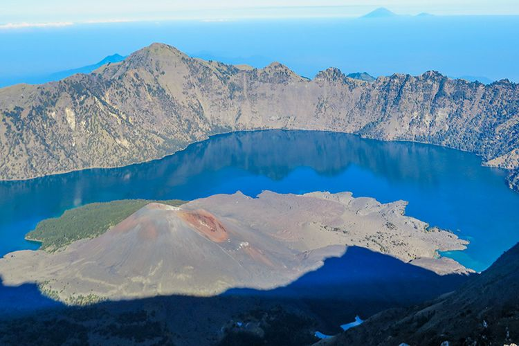

Gunung Rinjani
Dengan ketinggian 3.726 mdpl dan terletak di utara Pulau Lombok, Gunung Rinjani merupakan gunung berapi kedua tertinggi di Indonesia. Masuk dalam kawasan Taman Nasional Gunung Rinjani dan dikelilingi oleh hutan dan semak belukar seluas 76.000 hektar merupakan pemandangan yang asri bagi Gunung Rinjani.
Gunung Rinjani memiliki kawah dengan lebar sekitar 10 km dan terdapat danau kawah yang disebut danau Segara Anak dengan kedalaman sekitar 230 m. Dengan warna airnya yang membiru bagaikan anak lautan, air yang mengalir dari danau ini membentuk air terjun yang sangat indah dan mengalir melewati jurang yang curam. Banyak para pendaki yang memancing di danau ini karena banyak terdapat ikan mas dan mujair.
Ada 2 jalur pendakian untuk mencapai Puncak Rinjani, yaitu Jalur Sembalun dan Jalur Senaru. Jalur Sembalun merupakan jalur favorit para pendaki karena meskipun treknya lebih panjang namun bisa menghemat 700 m ketinggian. Di Jalur Sembalun, pendaki akan melalui hamparan padang savana yang sangat luas dan cantik. Ada 3 pos peristirahatan di jalur ini, dan selepas dari pos 3 pendaki akan menghadapi tanjakan terjal dengan kemiringan sekitar 60 derajat. Sedangkan di Jalur Senaru, pendaki akan melewati hutan tropis yang cukup lebat dan terjal. Sama halnya dengan Jalur Sembalun, jalur ini juga terdapat 3 pos peristirahatan sebelum nantinya sampai ke pos pelawangan yang biasa digunakan sebagai area perkemahan.
Pesona yang dimiliki oleh Gunung Rinjani nyaris sempurna sehingga tidak diragukan lagi jika Rinjani menjadi daya tarik yang mampu memikat minat para wisatawan mancanegara maupun nusantara untuk mendakinya. Dan mendaki Gunung Rinjani tentunya akan menjadi kenangan dan pengalaman hidup yang tidak akan terlupakan.
Sejarah
Gunung Rinjani merupakan salah satu gunung di Sulawesi Utara yang terbentuk pada masa Kuartener. Apa itu masa Kuartener? Periode Kuartener / masa kuartener adalah sebutan untuk periode tarakhir zaman kenozoikum dalam skala waktu geologi. Periode ini berlangsung sekitar 5.000 tahun yang lalu dan banyak membentuk penampakan alam yang ada di bumi hingga saat ini.
Letusan Gunung Rinjani tercatat terjadi pertama kali pada tahun 1846. Berdasarkan data yang dikeluarkan oleh Pusat Vulkanologi dan Mitigasi Bencana Geologi (PVMBG), dalam rentang waktu 1846-2009, telah terjadi letusan sebanyak 11 kali yang beral dari Gunung Rinjani. Sampai saat ini letusan Gunung Rinjani terakhir kali terjadi pada November 2015.